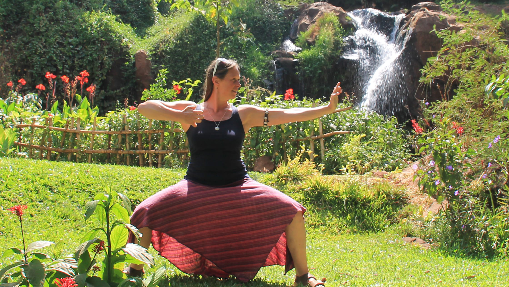

21 maart & 4 april 2026
Klank & Beweging
 Beweging in Klank is Waarneembaar
Beweging in Klank is Waarneembaar
In een meditatieve staat ontspant het lichaam. Geluiden worden niet alleen beter hoorbaar, maar ook intenser voelbaar.
Tijdens deze bijzondere dag bewegen we meditatief op klank en maken we gebruik van authentieke Tai Chi-,
Qigong- en Taoïstische bewegingssystemen zoals Yi Jin Jing, Ba Duan Jin en zen-loopmeditatie.
We wekken onze dromen met intuïtie en creativiteit. Je wordt begeleid om je hersenen in de Theta-staat te brengen – een diepe ontspanningstoestand
waarin je moeiteloos toegang krijgt tot het onderbewustzijn. Hier kan onbewuste stress losgelaten worden en ontstaat ruimte voor nieuwe inzichten.
In deze ‘staat van genezing’ rusten en herstellen lichaam en geest, en kunnen emoties en herinneringen op een natuurlijke manier verwerkt worden.
Werken met Klank. We maken gebruik van klankschalen, sjamaandrum en diverse percussie-instrumenten. Centraal staat deze dag echter de Gong.
De trillingen en resonantie zijn diep voelbaar in het lichaam. De klank van de Zon Gong ondersteunt je om je eigen licht te laten schijnen.
Wat leer je deze dag?
* Een eenvoudige maar effectieve Qigong-serie
* Jezelf beter gronden
* De kracht en werking van klank ervaren
Docenten
Tai Chi Meester Judith van Drooge - www.inner-touch.nl
Klankspecialist Gerrit Snellenburg - www.klankresonantie.nl
Data: Zaterdag 21 maart & Zaterdag 4 april 2026, Tijd: 12:30 – 15:30 uur.
Investering Per dag: €75,- Inclusief thee met wat lekkers.
Aanmelden per email is noodzakelijk. Na aanmelding krijg je een bevestiging met een betaalverzoek. Email: info@klankresonantie.nl
Locatie: Zaal Z. Hogeschool Windesheim On Campus, Campus 2-6, 8017 CA Zwolle. Parkeren kan gratis op P3/P4. Zaal Z bevindt zich direct naast de ingang van On Campus.
maart, april, mei 2026
Ontspannen Lunchconcert met Qigong & Klankschalen
 Kom lunchen met meer aandacht.
Even uit de dagelijkse drukte stappen om te vertragen, te ademen en op te laden.
Tijdens onze Ontspannen Lunch combineren we bewust lunchen met live klanken en zachte Qigong-bewegingen.
Kom lunchen met meer aandacht.
Even uit de dagelijkse drukte stappen om te vertragen, te ademen en op te laden.
Tijdens onze Ontspannen Lunch combineren we bewust lunchen met live klanken en zachte Qigong-bewegingen.
Wat kun je verwachten:
Een unieke lunchpauze waarin zintuigen, ontspanning en energie weer in balans komen.
Laat je verwarmen door de klanken van de klankschalen en verstillen in jezelf.
Na de lunch voel je je geaard, opgeladen en helder — klaar om de rest van de dag met een glimlach in te gaan.
Menu
*Lunchen met live klankconcert – klankschalen brengen lichaam en geest tot rust
*Resetmoment – even niets hoeven, je hersengolven ontspannen mee
*Chi Kung-bewegingen – activeren van het lichaam met zachte, toegankelijke oefeningen
*Stiltepauze – navoelen, mijmeren en gewoon zijn
Docenten
Tai Chi Meester Judith van Drooge - www.inner-touch.nl
Klankspecialist Gerrit Snellenburg - www.klankresonantie.nl
Wanneer: Dinsdag 17 & 31 maart, 7 & 14 april, 12 & 19 mei 2026. Van 12:00 tot 13:30 uur.
Locatie: Praktijk Klankresonantie – Gein 55, Zwolle
Neem je eigen lunch mee, wij zorgen voor koffie, thee en water.
Entree: €33,- per keer. Serie van 6 lunches: €175,-
Er zijn slechts 6 plekken per keer beschikbaar, dus meld je tijdig aan, Email: info@klankresonantie.nl
Na aanmelding ontvang je een bevestiging met een betaalverzoek.
Ook boekbaar op locatie bij bedrijven of organisaties – vraag gerust naar de mogelijkheden.
april, mei, augustus, september 2026
Chi Kung buitenlessen
 Losse lessen in Park de Wezenlanden door Judith van Drooge.
Chi Kung flow sessies een combinatie van bekende Chi Kung oefeningen.
Losse lessen in Park de Wezenlanden door Judith van Drooge.
Chi Kung flow sessies een combinatie van bekende Chi Kung oefeningen.
Een fusie van de beste oefeningen in elkaar geweven, welke elkaar aanvullen, voor een uitmunten resultaat op gebiedt van gezondheid en ultieme ontspanning.
Zowel voor het lichaam als voor de geest. De oefeningen zijn goed te volgen voor iedereen ongeacht ervaring.
Gecoördineerde bewegingspatronen op het ritme van je ademhaling. Jouw wezen, jouw aanwezigheid brengt kwaliteit in je lichaam, in het hier en nu.
Onder de professionele begeleiding van Judith van Drooge, die jou het beste gunt, ga je zelf ervaren wat éénheid en balans is voor jou.
Zij geeft handreikingen in de diversiteit binnen Tai Chi, Chi Kung en het pad van zelfontwikkeling.
Judith laat je kennismaken met oefeningen als “trek negen koeien aan hun staart”, uit de Yi Jin Jing set. Welke gericht zijn op de pezen, om deze soepel en flexibel te houden.
Bijvoorbeeld voor mensen met bevroren schouders. Oefeningen uit de Ba Duan Jin, de 8 gezondheidsschatten. 18 Tai Chi Chi Kung, Shibashi, 1ste en 2de set.
Het bevorderen van een goede doorstroming van levensenergie en de doorbloeding in alle cellen.
Harmonie vinden in jezelf en het ritme tussen hemel en aarde. Yin en Yang. The wave of life!
Woensdag 15, 22, 29 april, 6, 13, 20, 27 mei, 3 juni,
19, 26 aug. 2, 9, 16 , 23 sept. 2026 van 19:15 tot 20:15 uur.
€18,- per keer of betaal inplaats van €252,- nu €200,- voor 14 lessen. Locatie: Park de Wezenlanden Zwolle
Bankrek. NL19RABO0155.9644.61 t.n.v. J. van Drooge o.v.v. Chi Kung buitenles
of betaal contant bij aankomst. Mail to judithtaichi@aol.com om je aan te melden.
 Workshop ‘Sabel’ – Introductie in de Yangstyle Sabelvorm
Workshop ‘Sabel’ – Introductie in de Yangstyle Sabelvorm
Op 2 mei 2026 geeft master Judith van Drooge een inspirerende workshop waarin je kennismaakt met de Yangstyle sabelvorm (orig : Rosa Chen).
Tijdens deze dag krijg je een introductie in de dynamiek, kracht en souplesse van de sabel binnen de Yangstijl.
De workshop is geschikt voor zowel nieuwsgierige beginners als beoefenaars die hun Tai Chi willen verdiepen met wapenvormen.
Judith van Drooge begeleidt de deelnemers stap voor stap door enkele onderdelen van de vorm, die op zichzelf al fijn zijn om te beoefenen.
Hierdoor heb je een introductie voor een uitgebreidere serie workshops in de loop van 2026. (Datums volgen nog)
Datum: 2 mei 2026
Tijd: 10:30 – 16:00 uur
Bijdrage: €75,-
Locatie : Lelystad, Stationsweg 10
Meenemen : gemakkelijke kleding, Tai Chi schoentjes of gympen.
Houd er rekening mee dat er ook buiten geoefend kan worden ( parkje op 10 minuten lopen ).
Er is thee/koffie bij binnenkomst. Neem een waterbidon en eigen lunch mee.
Bij voorkeur een eigen sabel meenemen.
Meld je tijdig aan, Email: judithtaichi@aol.com
Na aanmelding ontvang je een bevestiging met een betaalverzoek.
Organisatie www.taichitaolelystad.nl
16 & 17 mei 2026
18 Tai Chi Chi Kung bewegingen
“Shibashi”
Shibashi (18 Tai Chi Chi Kung bewegingen) is een populaire,
toegankelijke Qigong-serie die ademhaling, aandacht en vloeiende bewegingen combineert om lichaam en geest te ontspannen.
Het verbetert evenwicht, soepelheid en mentale focus, en dient vaak als warming-up voor Tai Chi of als op zichzelf staande gezondheidsoefening.
Belangrijke kenmerken:
Toegankelijkheid: Geschikt voor alle leeftijden en fitnessniveaus; kan staand of zittend worden uitgevoerd.
Duur: Een volledige set Shibashi duurt ongeveer 15-20 minuten. Het is een vaste reeks welke gemakkelijk aan te leren is.
Focus: De nadruk ligt op een vloeiende, continue uitvoering en diepe ademhaling.
Regelmatige beoefening kan helpen bij het verminderen van stress, het versterken van de spieren en het verbeteren van de balans.
Twee dagen, twee sets Shibashi met Master Judith van Drooge
Chi Kung ShiBaShi 1ste set zaterdag 16 mei, van 10:30 tot 13:00 uur, €40,- .
Chi Kung ShiBaShi 2de set zondag 17 mei, van 10:30 tot 13:00 uur, €40,- .
overmaken op rekeningnummer NL19RABO01559.64.461 t.n.v. J. van Drooge o.v.v Tai Chi Stok.
Locatie: Park de Wezenlanden Zwolle. Mail to judithtaichi@aol.com om je aan te melden.
23 mei 2026
Tai Chi stok vorm en Zhu Dao Chi Kung
“de weg van bamboe”
 We beginnen de workshops met de Zhu Dao Chi Kung om het lichaam warm te maken en de geest zacht. Een plezierige warming-up.
Vervolgens duiken we in de Stok vorm om de coördinatie aan te spreken en balans te versterken. Tussendoor maken we kennis met elkaar door partneroefeningen,
of te wel applicaties van de vorm bewegingen, zo scherpen we alle zintuigen aan. Genoeg afwisseling een dag van 10:30 tot 16:30 uur is dan ook zo voorbij.
We beginnen de workshops met de Zhu Dao Chi Kung om het lichaam warm te maken en de geest zacht. Een plezierige warming-up.
Vervolgens duiken we in de Stok vorm om de coördinatie aan te spreken en balans te versterken. Tussendoor maken we kennis met elkaar door partneroefeningen,
of te wel applicaties van de vorm bewegingen, zo scherpen we alle zintuigen aan. Genoeg afwisseling een dag van 10:30 tot 16:30 uur is dan ook zo voorbij.
Zhu Dao Chi Kung "de weg van bamboe". Deze reeks oefeningen stimuleren de Chi = vitale levensenergie. Met behulp van een stok strek oefeningen en zelfmassage doen.
Dit is een manier om de gezondheid en de balans van het lichaam te optimaliseren.
Shaolin Stok vorm van 24 bewegingen ontwikkeld voor zelfverdediging. Het wapen is een verlengstuk van en beweegt als één geheel met het lichaam.
Master Judith van Drooge
Zaterdag 23 mei, €75,- Ook te boeken per onderdeel:
Zhu Dao Chi Kung van 10:30-12:30 uur, €35,-
Tai Chi Shaolin Stok vorm van 14:00-16:30 uur, €40,-
overmaken op rekeningnummer NL19RABO01559.64.461 t.n.v. J. van Drooge o.v.v Tai Chi Stok.
Locatie: Park de Wezenlanden Zwolle. Mail to judithtaichi@aol.com om je aan te melden.
23 Augustus 2025
Pushing Hands
 Push Hands played as a free play, act and react in a direct manner.
Firm steady standing rooted like a tree, flexible fluent and adapting like water.
Focus concentrated with a warm heart filled with fire, solid strong compact as the earth. © Judith
Push Hands played as a free play, act and react in a direct manner.
Firm steady standing rooted like a tree, flexible fluent and adapting like water.
Focus concentrated with a warm heart filled with fire, solid strong compact as the earth. © Judith
Voor het beter begrijpen van de bewegingen in de Tai Chi vorm, worden de langzame stoot en afweer bewegingen tot toepassing gebracht.
Zo worden de houdingen versterkt door hun specifieke applicatie voor martial arts. Applicaties worden samen geoefend voor het beter leren aanvoelen van de ander.
Soms zal er een vaste vorm, een cyclus van bewegingen gedaan worden Dalu. Afwisselend worden bewegingsprincipes geïmproviseerd zo ontstaat er een spel: vrij Pushing Hands, elkaar uit balans weten te duwen.
Ultieme gronding
hoofdleraar Judith van Drooge
zaterdag 23 augustus 2025, van 11.00 tot 16.30 uur. Prijs totaal €75,-
overmaken op rekeningnummer NL19RABO01559.64.461 t.n.v. J. van Drooge o.v.v Pushing Hands.
Locatie: Park de Wezenlanden Zwolle. Mail to judithtaichi@aol.com om je aan te melden.
Any time
Online Chi Kung Flow

Chi Kung flow sessions are a combination of the most well-known and effective Chi Kung exercises. The sessions will feature a fusion of the best exercises woven together to complement each other,
giving outstanding results for health and relaxation, for body and mind. They are easy to follow exercises which anyone can do regardless of experience.
They are composed of coordinated movement patterns based on the rhythm of your breath. Working with your awareness, the movements have powerful immediate benefits for your body.
Internationally respected Tai Chi and Chi Kung teacher Judith van Drooge will take you through the exercises which will improve your balance and wellbeing.
She will coach you through what Tai Chi and Chi Kung have to offer for self-development.
Judith will let you get acquainted with movements like “pulling nine cows by their tails”, from the renowned Yi Jin Jing set.
This series is focused on the tendons, to keep them flexible, which is very helpful for example for people with frozen shoulders.
The sessions will also include movements from the Ba Duan Jin, the 8 brocade or 8 treasures. 18 Tai Chi Kung, Shibashi, first and second sets.
Together these exercises will stimulate live energy flow and blood circulation to all cells in your body.
You will find harmony within yourself and the rhythm between heaven and earth. Yin and Yang, The wave of life!
IThese sessions are pre-recorded, so you will be able to review it any time and repeat it as many times as you like, in your own time, place and pace.
These classes are in English.
The online platform that is being used is YouTube.
25 euro for a two hour session.
Teacher: Judith van Drooge.
Sign up for the class(es) within a minimum of 24 hours before start of the course by sending an e-mail to judithtaichi@aol.com and make sure the payment is done.
Confirmed login details will be sent by email upon receiving of payment, ultimately one hour in advance. BIC: RABONL2U IBAN: NL19RABO0155.9644.61 name: J. van Drooge payee description: online Chi Kung. Or by using PayPal.
Introduction to a class. Easy to follow Chi Kung/Qigong exercises with Judith.
Follow this link go to YouTube
Any time
Meditatie moment, 100% in het moment
 Visualiserende ontspanningsmeditaties, intuïtieve ontwikkeling,
Geluidsopnames via WhatsApp ontvangen welke zijn ingesproken tijdens live sessies door Judith van Drooge (Nederlands gesproken).
Meditaties, zittend (staand of liggend) kan je ten alle tijden beluisteren of opnieuw herhalen als het je bevalt.
Kies daarvoor een rustig moment waarbij je niet gestoord wordt. Een moment voor jezelf om uit het hoofd en in je hart te komen.
Je gedachten te laten rusten, op non actief, in de yin stand te zetten. Te luisteren naar je ademhaling. Geniet van de “Wave of life”.
Visualiserende ontspanningsmeditaties, intuïtieve ontwikkeling,
Geluidsopnames via WhatsApp ontvangen welke zijn ingesproken tijdens live sessies door Judith van Drooge (Nederlands gesproken).
Meditaties, zittend (staand of liggend) kan je ten alle tijden beluisteren of opnieuw herhalen als het je bevalt.
Kies daarvoor een rustig moment waarbij je niet gestoord wordt. Een moment voor jezelf om uit het hoofd en in je hart te komen.
Je gedachten te laten rusten, op non actief, in de yin stand te zetten. Te luisteren naar je ademhaling. Geniet van de “Wave of life”.
Praktische informatie
Via WhatsApp worden de meditaties gedeeld doormiddel van geluids-/ luister fragmenten. Hiervoor heb je een smartphone nodig met WhatsApp.
De meditaties duren gemiddeld 45 minuten. Je krijgt elke dag, 25 dagen lang, een nieuwe meditatie toegestuurd.
Voor het ontvangen van de meditaties is jouw bijdrage 50 euro; dus 2 euro per meditatie.
Maak het bedrag over op rekeningnummer NL19RABO01559.64.461 t.n.v. J. van Drooge o.v.v. WhatsApp Meditatie.
Aanmelden doe je door mij in te lichten via WhatsApp. App me op mobiele telefoonnummer 06-48730646. Vriendelijke groeten Judith.